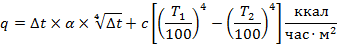
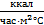
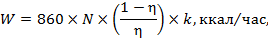
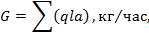

МИНИСТЕРСТВО
ХИМИЧЕСКОЙ И НЕФТЕПЕРЕРАБАТЫВАЮЩЕЙ
ПРОМЫШЛЕННОСТИ СССР
ИНСТРУКЦИЯ
ПО ПРОЕКТИРОВАНИЮ
ОТОПЛЕНИЯ И ВЕНТИЛЯЦИИ
НЕФТЕПЕРЕРАБАТЫВАЮЩИХ И НЕФТЕХИМИЧЕСКИХ
ПРЕДПРИЯТИЙ
второе издание
ВСН 21-77
МНХП СССР
Москва, 1990 г.
"Инструкция по проектированию отопления и вентиляции нефтеперерабатывающих и нефтехимических предприятий" ВСН 21-77/МНХП СССР разработана институтами ВНИПИнефть и Гипрокаучук, согласована с Госстроем СССР (письмо от 11.07.77 г. № 1-2344), утверждена и введена в действие с 1 января 1978 г. Миннефтехимпромом СССР (приказ № 589 от 17.09.77 г.).
В инструкции учтены замечания Минздрава СССР (письмо от 6.06.75 г. № 122-14/1141а-4), ГУПО МВД СССР (письмо от 18.03.75 г., № 7/6-1249), Госгортехнадзора СССР (письмо от 13.01.75 г. № 11-33/28), а также научно-исследовательских институтов - Уфимского НИИ гигиены труда и профзаболеваний (письмо от 23.05.73 г. № 610) и ВНИИТБ (письмо от 25.05.73 г. № Гк-6/1316).
Настоящая Инструкция является единым нормативным документом для проектирования отопления и вентиляции на нефтеперерабатывающих и нефтехимических заводах и на заводах синтетического каучука. Она разработана с учетом накопленного опыта эксплуатации систем отопления и вентиляции на указанных предприятиях, а также на основе анализа имеющихся научных исследований в области отопления и вентиляции.
Однако за период с 1.01.78 г. введен в действие ряд новых нормативных документов, потребовавших дополнений и изменений. Поэтому с учетом указанного, а так же предложений более 35 проектных и промышленных организаций, институтами ВНИПИнефть и Гипрокаучук разработаны Дополнения к Инструкции согласованы с Минздравом СССР (письмо от 24.08.89 г. № 142-5/312-4), ГУПО МВД СССР (письмо от 28.12.89 г. № 7/12/2061), Уфимским НИИ гигиены и профессиональных заболеваний (письмо от 6.07.89 г. № 08-693) и Утверждены Зам. Министра химической и нефтеперерабатывающей промышленности 22 января 1990 года.
Пользования двумя раздельными документами - Инструкцией и Дополнениями усложняют работу, поэтому учитывая просьбу ряда организаций, подготовлено второе издание Инструкции с учетом указанных дополнений.
Составили:
инж. Лютинская А.С. (ВНИПИнефть)
инж. Богатырев Б.А. (Гипрокаучук)
|
Министерство химической и нефтеперерабатывающей промышленности СССР |
Ведомственные строительные нормы |
ВСН 21-77 МНХП СССР второе издание |
|
Инструкция по проектированию отопления и вентиляции нефтеперерабатывающих и нефтехимических предприятий |
Взамен "Норм на проектирование отопления и вентиляции в производствах СК и СС" 1961 г. и "Норм проектирования отопления и вентиляции промышленных зданий нефтегазоперерабатывающей промышленности" НОВНП-67-1968 г. ВСН 5-69 МНХП СССР |
1.1. Настоящая инструкция распространяется на проектирование отопления и вентиляции нефтеперерабатывающих и нефтехимических предприятий.
Кроме настоящей Инструкции, при проектировании отопления и вентиляции следует руководствоваться строительными нормами и правилами СНиП, санитарными и другими нормативными документами, утвержденными или согласованными Госстроем СССР или Миннефтехимпромом СССР в установленном порядке, а также "Правилами устройства электроустановок" (ПУЭ) и "Правилами изготовления взрывозащищенного и рудничного электрооборудования" (ПИВРЭ).
1.2. С момента введения в действие настоящей Инструкции она распространяется на все объекты, по которым начинается проектирование или реконструкция.
В вопросах, относящихся к эксплуатации систем отопления и вентиляции, Инструкция распространяется на все действующие производства.
|
Внесена Всесоюзным научно-исследовательским и проектным институтом нефтеперерабатывающей и нефтехимической промышленности "ВНИПИНефть" и Государственным проектным и научно-исследовательским институтом промышленности синтетического каучука "Гипрокаучук" |
Утверждена Дополнения утверждены заместителем Министра Минхимнефтепрома СССР тов. Чеголя А.С. 22.01.90 г. |
Срок |
Примечание: 1. Под реконструкцией следует понимать такие изменения в технологическом процессе или в объемно-планировочных решениях, которые ведут к существенному переустройству отопления и вентиляции объекта или значительных его узлов. 2. При разработке проектов реконструкции или расширения предприятий, настоящая Инструкция распространяется только на реконструируемую или расширяемую часть предприятия.
1.3. Порядок и сроки приведения действующих предприятий в соответствие с настоящей Инструкцией устанавливаются в каждом конкретном случае администрацией завода по согласованию с техническим инспектором профсоюза и местными органами Госгортехнадзора СССР, а на предприятиях, требующих полного или значительного переустройства отопления и вентиляции, Минхимнефтепромом СССР по согласованию с Госгортехнадзором СССР и ЦК профсоюза рабочих химической и нефтехимической промышленности. Частичное отступление от данной Инструкции допускается при условии согласования его с руководством предприятия, на котором предусматривается данное отступление, с УПО, ОПО УВД и ГУВД Крайоблгорисполкомов, МВД республик или ГУПО МВД СССР.
1.4. Поступление вредных выделений и тепловыделений в воздух рабочих помещений должно предотвращаться, в первую очередь, за счет технологических мероприятий и рациональной организации производственного процесса:
- герметизации и термоизоляции оборудования, мокрой обработки пылящих материалов, нейтрализации и очистки вредных выделений, применения бессальниковых насосов и компрессоров или с сальниками, исключающими попадание продуктов в помещение;
- исключения открытых процессов с токсичными и взрывоопасными продуктами, применения процессов с использованием вакуума.
1.5. Для мест интенсивного выделения вредных или взрывоопасных газов, паров и пыли, которые не могут быть устранены по условиям технологического процесса, предусматривать устройство местных отсосов.
2.1. Теплоснабжение отопительных и вентиляционных систем предприятия предусматривать от тепловых сетей ТЭЦ или использовать вторичные тепловые ресурсы, в которые исключено попадание вредных веществ, например: пар и вода котлов-утилизаторов, в некоторых случаях отработанный пар, горячая вода и т.п.
2.2. В помещениях с производствами категорий А, Б предусматривать, как правило, воздушное отопление, совмещенное с приточной вентиляцией. Водяное или паровое отопление допускается предусматривать при соблюдении следующих условий:
- если площадь одного помещения не превышает 150 м2;
- если температура поверхности нагревательных приборов и трубопроводов не превышает 80 % температуры самовоспламенения продуктов, которые могут находиться в помещении;
- если в помещении отсутствуют пары, газы, жидкости или пыль, способные при взаимодействии с водой или водяными парами к взрыву, самовоспламенению или выделению взрывоопасных газов.
Отопление в помещениях с производствами категорий В, Г, Д предусматривать в соответствии с требованиями СНиП.
2.3. Отопительно-рециркуляционные агрегаты для воздушного отопления, не совмещенного с вентиляцией, допускается устанавливать в помещениях с производствами категорий В, Г, Д, где отсутствуют производственные выделения пыли и вредных веществ.
2.4. При проектировании систем отопления расчетные температуры воздуха в производственных помещениях принимать следующими, если особенности производства не требуют более высоких температур:
- при длительном пребывании обслуживающего персонала - допустимую по санитарным нормам для категории работы средней тяжести;
- при пребывании не более 30 минут, а также при проектировании систем дежурного отопления - плюс 5 °С.
2.5. При составлении тепловых балансов учитывать:
- тепловыделения оборудованием и трубопроводами в рабочую зону, если они постоянны;
- поступление тепла от солнечной радиации в летнее время;
- расход тепла на инфильтрацию наружного воздуха (см. приложение 1 настоящей Инструкции);
- расход тепла на нагревание оборудования и материалов, вносимых в помещение;
- при устройстве кондиционирования воздуха - тепловыделения от работающих людей и освещения, поступление тепла или теплопотери через внутренние стены смежных помещений.
2.6. Поступления тепла в помещения от оборудования, трубопроводов и электродвигателей должны быть указаны в задании на проектирование или в технологической части проекта. В случае невозможности получить такие данные от технологов тепловыделения определять по следующим формулам:
- от нагретых поверхностей оборудования и трубопроводов по формуле:
|
 |
где: q - тепловыделения с 1 м2 наружной поверхности аппарата или изоляции, ккал/час×м2;
Dt - разность температур наружной поверхности аппарата или изоляции и окружающего воздуха, °С;
a - коэффициент конвективного теплообмена, 
принимать:
для вертикальных поверхностей - 2,2
для горизонтальных поверхностей - 2,8
для трубопроводов до 100 мм - 1,2
для трубопроводов более 100 мм - как для горизонтальных или вертикальных поверхностей;
с - приведенный коэффициент лучеиспускания ;
T1 - абсолютная температура наружной поверхности, °С;
T2 - абсолютная температура окружающего воздуха, °С.
- от электродвигателей по формуле:
|
 |
где: N - установочная мощность постоянно работающих электродвигателей, квт;
h - коэффициент полезного действия электродвигателя;
k - коэффициент загрузки электродвигателя.
Тепловыделения от электродвигателей с воздушным или водяным охлаждением не учитывать. Таблицу выделений тепла от центробежных насосов см. в приложении 2 настоящей Инструкции.
2.7. При устройстве воздушного отопления устанавливать не менее двух рабочих агрегатов или одну постоянно действующую систему. Во время кратковременной аварийной остановки одного приточного или отопительно-рециркуляционного агрегата должна быть обеспечена температура воздуха в помещении не ниже +5 °С.
2.8. Во всех электропомещениях (трансформаторные подстанции, распределительные пункты и т.п.) и помещениях контрольно-измерительных приборов (КИП) предусматривать как правило воздушное отопление, совмещенное с приточной вентиляцией.
В исключительных случаях, при соответствующем обосновании, допускается:
- в электропомещениях - водяное или паровое отопление нагревательными приборами из труб (конвекторы, гладкие трубы) без разъемных соединений с обязательной установкой запорной арматуры в смежных помещениях другого назначения и соответствующей защитой электрооборудования от попадания на него влаги при нарушении герметичности системы с учетом требований "Правил устройства электроустановок";
- в электропомещениях, удаленных от тепловых сетей, где не требуется приточная вентиляция для подпора - электрическое отопление;
- в помещениях КИП - отопление водяное, радиаторами или конвекторами с температурой на поверхности нагревательных приборов до 150 °С с соответствующей защитой контрольно-измерительных приборов от попадания на них влаги при нарушении герметичности системы. В защитовом пространстве нагревательные приборы не устанавливать.
2.9. В случае размещения над электропомещениями или помещениями КИП помещений с водяным или паровым отоплением нагревательные приборы в последних выполнять из труб (конвекторы, гладкие трубы) без разъемных соединений с обязательной установкой запорной арматуры в помещениях, не расположенных над электропомещениями и помещениями КИП, и устройством надежной гидроизоляции перекрытия.
2.10. Прокладку трубопроводов с паром и водой из помещений с производствами категорий А, Б, в помещения с производствами категорий В, Г, Д допускать как исключение и предусматривать тщательную герметизацию мест прохода и свободное тепловое удлинение трубопроводов по обе стороны стены.
2.11. Узел ввода теплоносителя может располагаться:
- в помещении для оборудования систем приточной вентиляции (приточной вентиляционной камере);
- в помещениях с производствами категорий Г, Д, если это допускается по условиям производства;
- в самостоятельном помещении с отдельным входом в него снаружи, из лестничной клетки или из помещений с производствами категорий В, Г, Д.
При отсутствии указанных выше помещений узел управления может быть расположен в помещениях с производствами категорий А, Б, В, в которых допускается водяное или паровое отопление.
2.12. Обогрев полов открытых насосных, расположенных под навесами или этажерками наружных установок, для обеспечения таяния снега и испарения влаги, проектировать согласно заданию технологов.
Расчетную температуру поверхности пола принимать равной плюс 5 °С. В качестве теплоносителя принимать воду с температурой не ниже 70 °С и не выше 150 °С. Расход тепла определять при наружной температуре воздуха, равной средней температуре наиболее холодной пятидневки (расчетная температура для проектирования отопления).
2.13. Обогревающие змеевики полов открытых насосных выполнять из бесшовных труб с гнутыми калачами и отводами и со сварными стыками на прямых участках. Змеевик укладывать на бетонную подготовку, как правило, горизонтально, толщину слоя бетона от верха трубы до отметки чистого пола принимать не менее 50 мм. На случай аварийного опорожнения змеевика предусматривать штуцеры для подвода сжатого воздуха. Трубопроводы, укладываемые в бетоне, должны иметь антикоррозийную защиту - после тщательной очистки поверхности.
2.14. Каждую секцию пола, ограниченную температурными швами, как правило, обслуживать самостоятельным трубопроводом (системой). Пересечение температурного шва допускается специальным компенсатором с защитным коробом.
Узел ввода теплоносителя, установленный в открытой насосной, может быть общим для нескольких систем. В узле предусматривать: грязевик на подающей линии, отключающую стальную арматуру на подающей и отводящей линиях теплосети и для каждой секции пола, термометры и манометры, а также предусматривать возможность опорожнения трубопроводов при отключении системы.
3.1. Во всех производственных помещениях для обеспечения метеорологических условий, чистоты и взрывобезопасности воздушной среды, установленных санитарными нормами и нормами техники безопасности, предусматривать вентиляцию с механическим, естественным побуждением или смешанную.
3.2. За расчетную наружную температуру для проектирования вентиляции в холодный период года принимать:
а) расчетную отопительную температуру (параметры "Б") для следующих приточных систем:
- совмещенных с воздушным отоплением;
- обслуживающих помещения, где не допускается рециркуляция внутреннего воздуха;
- постоянно действующих;
- компенсирующих воздух, удаляемый местными отсосами и технологическим оборудованием;
б) расчетную вентиляционную температуру (параметры "А") - для всех остальных систем.
3.3. Количество воздуха, необходимого для обеспечения требуемых параметров воздушной среды в помещении, определять расчетом по количеству газо-паровыделений и выделений пыли, тепла и влаги.
За расчетное количество воздуха принимать большее, полученное из расчетов для каждого вида производственных вредностей.
При одновременном выделении в помещение нескольких вредных веществ, обладающих эффектом суммации действия, воздухообмен следует определить, суммируя расходы воздуха, рассчитанные по каждому из этих веществ.
3.4. Необходимый воздухообмен в производственных помещениях с газо-паровыделениями, как правило, рассчитывать по количеству вредных выделений от оборудования, арматуры и коммуникаций. Количество вредных выделений принимать по данным технологической части проекта.
При отсутствии таких данных следует использовать данные натурных обследований аналогичных действующих цехов и производств. Для цехов и производств, по которым нет аналогов, допускается рассчитывать количество воздуха по кратности воздухообмена, согласно приложению 3 настоящей Инструкции.
3.5. Воздухообмен в помещениях с процессами, выделяющими пыль, следует определять по суммарному количеству воздуха, где выделяется пыль, определять по суммарному количеству воздуха, удаляемого местными отсосами. Конструкцию местных отсосов и скорость движения воздуха в них выбирать с учетом недопустимости уноса материалов. При наличии в помещении тепловыделений следует производить проверочный расчет по избыткам явного тепла для теплого периода года и количество наружного воздуха принимать большее из величин, полученных при расчете.
3.6. В местах возможных вредных паро- и газовыделений (сальники насосов, мешалки и т.п.), которые невозможно оборудовать местными отсосами, располагать вытяжные насадки общеобменной вентиляции, выполняемые в виде приближенных отсосов.
3.7. При устройстве местных отсосов в помещениях, где воздухообмен определен по количеству вредных газо-паровыделений, их производительность учитывать в общем воздухообмене.
3.9. При определении производительности местного отсоса скорости воздуха в сечении открытого проема сплошного укрытия или зонта принимать следующие:
- для сплошных укрытий и зависимости от предельно допустимой концентрации паров и газов:
более 50 мг/м3 - 0,5 м/сек.;
более 5 до 50 мг/м3 включительно - 0,7 м/сек.;
менее 5 мг/м3 - 1,3 м/сек.;
- для зонтов при наличии водяных паров, газов высокой температуры и газов с удельным весом меньшим, чем удельный вес воздуха и рабочей зоне, - 1 м/сек., в остальных случаях - 1,3 м/сек.
3.10. В помещениях с производствами категорий А, Б, а также с производствами категорий В, Г, Д с выделением вредных веществ 1 и 2 класса опасности предусматривать приточную вентиляцию с механическим побуждением и вытяжную вентиляцию с механическим или естественным побуждением или смешанную (см. приложение 4 настоящей Инструкции). Удаление воздуха под перекрытием должно обеспечивать не менее однократного воздухообмена, определенного по расчетному внутреннему объему помещения, системами с естественным или механическим побуждением.
3.11. Удаление воздуха системами общеобменной вентиляции предусматривать от мест выделения вредностей или из зон и уровней наибольшего загрязнения воздуха в помещениях согласно таблице 1 приложения 4 настоящей Инструкции.
3.12. Подачу приточного воздуха в производственные помещения с выделением тепла, влаги, газов и паров осуществлять, как правило, в рабочую зону рассредоточенно. Сосредоточенную подачу воздуха в верхнюю зону горизонтальными компактными струями допускается предусматривать только при соблюдении всех следующих условий:
- если распространение вредностей по вертикали таково, что перемешивание воздуха во всем объеме помещения незначительно отразится на их содержании в рабочей зоне;
- если расположение оборудования и коммуникаций не создает препятствий для движения воздушного потока;
- если отсутствуют строго фиксированные рабочие места.
3.13. Все помещения, в которых согласно ПУЭ установлено электрооборудование в общепромышленном исполнении, расположенные на территории взрывоопасных технологических установок, должны быть обеспечены постоянно действующей приточной вентиляцией с механическим побуждением с кратностью воздухообмена не менее 3, или превышением приточной вентиляции с механическим побуждением над вытяжной не менее чем на 3 обм/час.
3.14. Организованным притоком не компенсировать следующую вытяжную вентиляцию с механическим побуждением:
- периодического действия для проветривания помещения перед входом обслуживающего персонала (резервуары химических стоков, будки газгольдеров и т.п.);
- общеобменную в неотапливаемых помещениях (склады химикатов, хлора и т.п.).
Во всех указанных помещениях предусматривать устройства для естественного проветривания.
3.15. В помещениях с производствами категорий В, Г, Д, расположенных на территории завода и имеющих заглубление 1 м и более от уровня земли, предусматривать приточную вентиляцию с механическим побуждением с кратностью воздухообмена не менее 3 обменов в час по полной кубатуре помещения для проветривания его нижней зоны.
При установке одной системы ее предусматривать постоянно действующей.
Примечания: Вентиляцию заглубленных помещений со взрывоопасными производствами проектировать согласно п. 3.10 настоящей Инструкции
3.16. Для приямков глубиной более 0,5 м, расположенных в помещениях с производствами категорий А, Б, в которых присутствуют газы или пары тяжелее воздуха, предусматривать приточную вентиляцию. Для приямков, требующих регулярного обслуживания, кроме приточной предусматривать также вытяжную вентиляцию. Приточные и вытяжные системы предусматривать постоянно действующими.
3.17. При наличии одной вытяжной системы в помещении с производствами категорий А, Б, в котором не требуется устройство аварийной вентиляции, вытяжную систему предусматривать постоянно действующей.
4.1. В помещениях с производствами категорий А, Б, а также в помещениях с вредными выделениями, в которых возможно внезапное поступление больших количеств взрывоопасных или вредных паров и газов в результате аварийного нарушения нормального протекания технологического процесса и целостности технологического оборудования и трубопроводов, следует предусматривать аварийную вытяжную вентиляцию с целью интенсивного проветривания помещений.
Необходимость устройства аварийной вентиляции определяется в технологической части проекта.
Кроме автоматического, для систем аварийной вентиляции предусматривать ручное (дистанционное и местное) включение (см. раздел 12 настоящей Инструкции).
4.3. Производительность систем аварийной вентиляции принимать:
- для помещений насосных и компрессорных равной 8-кратному воздухообмену по полному внутреннему объему помещения в дополнение к воздухообмену, создаваемому основными системами;
- для остальных производственных помещений не менее 8-кратного воздухообмена по полному внутреннему объему помещения, создаваемого совместно с основной (не аварийной) вентиляцией с механическим побуждением.
4.4. Воздухозаборные отверстия аварийной вытяжной вентиляции располагать в зоне возможных аварийных поступлений взрывоопасных и вредных паров и газов, около технологического оборудования и у глухих стен помещения согласно таблице 2 приложения 4 настоящей Инструкции. Не следует располагать отверстия для забора воздуха у открываемых окон и дверей.
4.5. Аварийную вытяжную вентиляцию следует осуществлять центробежными вентиляторами, расположенными снаружи здания на фундаментах, площадках, перекрытиях наружных установок и на покрытиях зданий, а в исключительных случаях - в венткамерах при соответствующем обосновании. Аварийную вытяжку из верхней зоны допускается осуществлять осевыми вентиляторами, расположенными на кровле или в стенах здания, при этом предусматривать возможность их обслуживания.
5.1. Электродвигатели в продуваемом исполнении, устанавливаемые в помещениях с производствами категорий А, Б подлежат продувке чистым воздухом в соответствии с требованиями ПУЭ и техническими условиями заводов-изготовителей.
5.2. Систему вентиляции электродвигателей принимать по разомкнутому или замкнутому циклу согласно заданию. При установке нескольких электродвигателей принимать, как правило, индивидуальные системы вентиляции для каждого двигателя.
В исключительных случаях, при необходимых обоснованиях, когда по конструктивным соображениям индивидуальные системы невыполнимы, для групп электродвигателей допускается предусматривать общую (групповую) систему вентиляции.
5.3. В индивидуальных и в групповых системах вентиляции электродвигателей предусматривать установку рабочего и резервного вентиляторов, сблокированных между собой, и фильтров для очистки воздуха от пыли при запыленности более 0,2 мг/м3. Для электродвигателей, установленных в отапливаемом помещении подаваемый воздух подогревать до температуры не менее плюс 5 °С.
5.4. При устройстве групповой системы вентиляции электродвигателей по замкнутому циклу на группу электродвигателей дополнительно предусматривать самостоятельную систему предварительной продувки каждого электродвигателя перед пуском с производительностью, которая обеспечит пятикратный воздухообмен в контуре электродвигателя за выбранное время.
5.5. В системе вентиляции электродвигателей предусматривать:
- установку перекидных или лепестковых клапанов, отключающих неработающий резервный вентилятор от воздуховодов;
- установку автоматических обратных клапанов в пределах венткамеры, отключающих воздуховоды от помещения со взрывоопасными производствами на период остановки системы;
- блокировку вентсистем с продуваемым электродвигателем, исключающую возможность пуска и работы электродвигателей без предварительной продувки и без заданного давления в вентилируемом контуре электродвигателя;
- установку шиберов в групповых системах для отключения продуваемого электродвигателя от сети воздуховодов в случае ремонта.
Скрытая прокладка допускается как исключение в засыпных каналах в случае расположения мест подключения воздуховодов к электродвигателю ниже уровня пола. Воздуховоды должны быть без фланцевых соединений.
5.7. Выброс воздуха при разомкнутом цикле вентиляции электродвигателей, а также из коробок контактных колец предусматривать вне помещения со взрывоопасными производствами выше кровли на 1 м.
6.1. Подземные и полуподземные кабельные каналы, проложенные на территории завода, должны иметь приточную вентиляцию с механическим побуждением для удаления теплоизбытков и проветривания.
6.2. Воздухообмен определять из условий ассимиляции теплоизбытков летом, допуская максимальную разность температур уходящего и поступающего воздуха 10 °С.
6.3. Для подачи воздуха в кабельный канал или группу каналов предусматривать установку одного вентилятора нормального исполнения с электродвигателем в закрытом исполнении АО. Для надежности эксплуатации приточных систем на складе завода должны храниться резервные агрегаты на группу однотипных вентиляционных агрегатов в количестве:
до 5 агрегатов 1 резервный
до 10 -"- 2 резервных
свыше 10 -"- 3 резервных.
6.4. Приточный воздух подавать без подогрева и без очистки от пыли. Приточные вентагрегаты располагать открыто около каналов или в отдельных случаях над каналами.
6.5. Воздухозаборные отверстия приточных шахт располагать на высоте не менее 6,0 м, выброс воздуха осуществлять естественным путем через шахты высотой не менее 1 м от поверхности земли.
6.6. Контроль за работой вентиляционных систем осуществлять звуковыми и световыми сигналами, вынесенными на диспетчерский пункт главного энергетика предприятия или ближайшую обслуживаемую подстанцию.
6.7. В существующих каналах могут быть оставлены тупиковые непродуваемые участки длиной не более 6 м, если одним торцом они сообщаются с продуваемым каналом или вентиляционной шахтой. Во вновь проектируемых вентилируемых каналах непродуваемых участков не допускать.
6.8. Протяженность каждого вентилируемого участка ограничивается размещением противопожарных бетонных плит-перемычек.
В случае преграды для прохода воздуха в местах расположения каналов под дорогами предусматривать устройство дополнительного канала или труб сечением, равным живому сечению канала.
6.9. Каждый вентилируемый участок оборудовать ручными заслонками для прекращения доступа воздуха в случае возникновения пожара.
7.1. Вентиляцию электропомещений выполнять в соответствии с требованиями ПУЭ и с требованиями настоящей Инструкции.
Приточная система, обеспечивающая подпор, должна быть постоянно действующей и может обслуживать несколько электропомещений и помещения КИП.
Для обеспечения подпора воздухом в электропомещениях в строительной части проекта должны быть обеспечены специальные мероприятия по герметизации помещения.
В производственных зонах со взрывопожароопасными установками и в зонах товарно-сырьевых складов (согласно классификации ВУПП-88) электропомещения и помещения управления технологическими процессами должны иметь гарантированный подпор воздухом с кратностью обмена приточной вентиляции не менее 5.
7.4. Количество приточного воздуха для помещений с тепловыделениями определять из условий ассимиляции теплоизбытков летом, допуская максимальную разность температур уходящего и поступающего воздуха 15 °C. Удаление приточного воздуха осуществляется естественным путем через неплотности строительных ограждений. Вытяжные устройства предусматривать, если приточная вентиляция создает 10-ти и более кратный воздухообмен. Вытяжные устройства пополнять таким образом, чтобы избежать попадания влаги через них на электрооборудование и обеспечить требуемый подпор приточного воздуха в электропомещения.
7.5. В отдельных камерах масляных трансформаторов, не имеющих ни одной общей стены с помещениями со взрывоопасными зонами и расположенных за пределами взрывоопасных зон, допускается предусматривать естественную приточно-вытяжную вентиляцию по борьбе с теплоизбытками.
Помещения управления производством (КИП).
8.1. При проектировании вентиляции помещений КИП и датчиков КИП руководствоваться пунктами 7.2 и 7.3 настоящей Инструкции. При проектировании кондиционирования воздуха в помещениях операторных, количество свежего (наружного) воздуха должно быть не менее 5 обм/час.
8.2. При совмещении приточной вентиляции с воздушным отоплением предусматривать распределение приточного воздуха по всей рабочей зоне.
Анализаторные
8.3. В анализаторных, в которые вводятся для анализа взрывоопасные и вредные вещества, предусматривать приточно-вытяжную вентиляцию с механическим побуждением, осуществляемую самостоятельными системами. В случае устройства нескольких анализаторных в одном здании их обслуживать одной приточной постоянно действующей системой, выключаемой при пожаре в одной из анализаторных. Вытяжные системы предусматривать раздельными для каждого помещения.
8.4. В анализаторных, в которых установлены приборы в нормальном исполнении, воздухообмен рассчитывать по количеству взрывоопасного вещества, которое может поступить в помещение при разрыве пробоподводящей трубки наибольшего диаметра у одного прибора, с тем, чтобы в помещении в течение часа при действующей вентиляции не могла бы образовываться взрывная концентрация.
При анализе вредных веществ воздухообмен проверять по ПДК (см. приложение 3 настоящей Инструкции), но во всех случаях кратность обмена принимать не менее 10.
Количество взрывоопасного вещества, которое может поступить в помещение, должно быть указано в задании на проектирование.
8.5. В анализаторных, в которых установлены приборы во взрывоопасном исполнении, воздухообмен определять по кратности обмена для производственных помещений согласно приложению 3 настоящей Инструкции, выбранной по тому из анализируемых продуктов, ПДК которого наименьший, но во всех случаях кратность обмена принимать не менее 10.
8.6. Воздухозабор для приточных систем анализаторных, в которых установлены приборы в общепромышленном исполнении, может быть общим с воздухозабором для систем, обслуживающих помещения с производствами категорий В, Г, Д, кроме систем, обслуживающих электропомещения и помещения КИП. Воздухозабор для приточных систем анализаторных, в которых установлены приборы во взрывоопасном исполнении, выполнять так же, как для производственных помещений.
8.7. При анализе взрывоопасных веществ вытяжные и приточные системы предусматривать постоянно действующими, при этом оборудование вытяжных систем принимать во взрывоопасном исполнении, оборудование приточных систем - в нормальном исполнении.
8.8. Воздух в анализаторную подавать в рабочую зону. Удалять воздух из нижней зоны 50 - 70 %, из верхней зоны 50 - 30 % объема притока. В шлюз при анализаторной воздух подавать приточной системой, обслуживающей данную анализаторную, в объеме не менее 10-кратного воздухообмена.
9.1. Настоящий раздел предусматривает указания по проектированию вентиляции цеховых лабораторных помещений. Вентиляцию корпусов ЦНИЛ и лабораторий с радиоактивными веществами проектировать в соответствии с "Инструкцией по проектированию зданий научно-исследовательских учреждений".
9.2. Воздухообмен в цеховых лабораториях определять по количеству удаляемого воздуха от шкафов и укрытий или, при их отсутствии, по следующим кратностям:
- лаборатории и помещения хранения проб - вытяжка 10, приток 8,5
- весовая -"- 3 -"- 3
- начальник лаборатории -"- 1,5 -"- 1,5
При отключении механической вентиляции шкафа вентиляция лабораторий осуществляется за счет естественного проветривания через открытый клапан-хлопушку в верхней части шкафа.
9.3. Расчетные скорости движения воздуха в рабочем проеме вытяжного шкафа и расчетные площади рабочего проема принимать согласно "Инструкции по проектированию зданий научно-исследовательских учреждений".
9.4. Приточную вентиляцию с механическим побуждением для компенсации удаляемого воздуха проектировать с учетом коэффициента одновременности работы шкафов, равного 1. Подачу приточного воздуха предусматривать непосредственно в лабораторное помещение в объеме 90 % от воздухообмена, остальное количество приточного воздуха подавать в коридор.
9.5. Вытяжные шкафы, расположенные в разных помещениях, обслуживать одной вытяжной системой не допускается.
9.6. Вентиляторы вытяжных систем, обслуживающих лабораторные шкафы, где проводятся работы со взрывоопасными продуктами, предусматривать во взрывобезопасном исполнении.
9.7. В лабораторных помещениях с однородными по пожарной опасности вредностями общеобменная вытяжная вентиляция с механическим побуждением может осуществляться одной системой. Местные отсосы (вытяжные шкафы и зонты) и общеобменную вытяжную вентиляцию одного лабораторного помещения допускается объединить в одну самостоятельную вытяжную систему.
Вертикальные участки воздуховодов предусматривать для каждого этажа отдельными, объединяя их перед вентилятором в пределах венткамер.
9.8. В помещении хранения проб взрывоопасных веществ предусматривать приточно-вытяжную вентиляцию с механическим побуждением. Приточная и вытяжная системы должны быть постоянно действующими и обслуживать только помещения хранения проб и тамбур-шлюз при них.
Оборудование вытяжной системы принимать во взрывобезопасном исполнении.
Приточный воздух подавать:
- в помещение хранения проб - 80 % объема вытяжки из него;
- в тамбур-шлюз - 10-кратный воздухообмен для подпора и дополнительно 20 % объема вытяжки из помещения хранения проб.
9.9. Размещать вентиляционное оборудование в лабораториях или коридорах запрещается.
9.10. В лабораторных помещениях с кратностью общеобменной приточно-вытяжной вентиляцией не менее 8 объемов в час, допускается производить хроматографические анализы непосредственно в этих помещениях. При меньшей кратности воздухообмена приборы для хроматографических анализов должны располагаться в вытяжных шкафах или под вытяжными зонтами.
10.1. Настоящий раздел предусматривает указания по проектированию вентиляции мастерских, маслопунктов, приточных и вытяжных венткамер.
10.2. В подсобно-производственных помещениях, имеющих общую стену с помещениями с производствами категорий А, Б, предусматривать постоянно действующую приточную вентиляцию согласно п. 3.13 настоящей Инструкции.
В подсобно-производственных помещениях, расположенных в пристройке к помещениям с производствами категорий А, Б, проектировать постоянно действующую приточную вентиляцию с механическим побуждением в объеме не менее 3-кратного воздухообмена по полной кубатуре.
В подсобно-производственных помещениях, расположенных вне территории взрывоопасной технологической установки или цеха, приточную вентиляцию с механическим побуждением проектировать только при наличии вытяжной вентиляции с механическим побуждением. При этом приточную систему проектировать без резервного вентилятора, работающей постоянно. Отключение ее на ремонт допускается только в теплый период года.
10.3. В мастерских предусматривать приточно-вытяжную вентиляцию. Объем приточной вентиляции с механическим побуждением принимать равным трехкратному обмену по полному объему помещения. Удаление воздуха может производиться вытяжной системой с естественным побуждением.
10.4. В маслопунктах категории В, расположенных на территории взрывоопасной технологической установки или в пристройке к помещениям со взрывоопасными производствами, предусматривать приточную и вытяжную вентиляцию для обеспечения воздухообмена не менее четырехкратного по полной кубатуре.
Если маслопункт категории В имеет общую стену с помещением со взрывоопасным производством, то превышение объема приточной вентиляции над вытяжной должно быть не менее трехкратного обмена.
Маслопункты категорий А, Б проектировать с соблюдением требований к взрывоопасным производствам.
10.5. В приточных венткамерах, где расположены системы, обслуживающие помещения с производствами категорий А, Б предусматривать постоянно действующую приточную вентиляцию в объеме трехкратного обмена и дополнительно в объеме 5 % от производительности установленных приточных систем.
Подачу приточного воздуха предусматривать:
- от специальных систем или систем, обслуживающих невзрывоопасные производства;
- при отсутствии указанных выше систем, если оборудование венткамеры предусмотрено во взрывобезопасном исполнении, постоянно действующей системой, обслуживающей взрывоопасное производство, или от двух систем, без резервных вентиляторов.
10.6. В приточных венткамерах, где расположены системы, обслуживающие помещения с выделением вредных веществ 1 и 2 класса опасности, вентиляцию проектировать в соответствии с требованиями СНиП.
10.7. В вытяжных венткамерах, где расположены системы, обслуживающие помещения с производствами категории А, Б или с выделением вредных веществ 1 и 2 класса опасности, предусматривать вытяжную вентиляцию в объеме однократного обмена воздуха в час с естественным или механическим побуждением.
10.8. Системы для создания подпора в тамбур-шлюзах при помещениях категорий А и Б в помещениях с выделениями вредных газов, паров и аэрозолей 1 и 2 классов опасности следует проектировать отдельными от систем другого назначения.
Допускается подачу воздуха в тамбур-шлюз проектировать от системы, обслуживающей помещения категории «Д» (кроме электропомещений).
При этом должны выполняться следующие требования:
- приточная система, обслуживающая тамбур-шлюз, должна быть постоянно действующей и не отключаться при пожаре;
- воздух в тамбур-шлюз должен подаваться самостоятельным воздуховодом с установкой в нем автоматического обратного клапана на выходе из венткамеры.
11.1. При размещении вентиляционного оборудования предусматривать удобство его обслуживания, ремонта, монтажа и демонтажа.
11.2. Оборудование приточных систем располагать, как правило, в венткамерах.
Размещать оборудование приточных систем снаружи допускается в исключительных случаях при невозможности устройства приточной венткамеры. Калориферы и трубопроводы к ним размещать в производственном помещении, соблюдая нормы проектирования водяного или парового отопления. Воздухозаборную трубу и вентилятор размещать снаружи здания в зоне, исключающей возможность подсоса взрывоопасных и вредных паров и газов. Оборудование приточных систем, расположенное в венткамерах и снаружи, принимать в нормальном исполнении, кроме случаев, указанных в п. 11.5 настоящей Инструкции.
11.3. Оборудование вытяжных систем, как правило, размещать снаружи здания на фундаментах, площадках, перекрытиях наружных установок и покрытиях зданий, а в исключительных случаях в вытяжных венткамерах. Допускается установка в помещении с производствами категорий А, Б устройств для очистки удаляемого воздуха от пыли и газов (фильтров, скрубберов). Оборудование вытяжных систем, обслуживающих помещения или местные отсосы с влажностью воздуха более 60 %, устанавливать снаружи не допускается.
11.4. Сухие пылеотделители и фильтры вытяжных систем, удаляющих запыленный воздух из помещений с производствами категорий А, Б следует устанавливать с устройствами непрерывного удаления уловленной пыли и возврата ее в технологический процесс.
11.5. Во взрывобезопасном исполнении следует принимать следующее вентиляционное оборудование:
- вытяжных систем, обслуживающих помещения с производствами категорий А, Б;
- воздушных завес, установленных в помещениях с производствами категорий А, Б;
- установленное в приточных заглубленных (более 0,5 м) венткамерах, имеющих общую стену с помещениями с производствами категорий А, Б;
- установленное в приточных венткамерах, находящихся в пристройке к помещению, на покрытии которого или на этажерке над ним размещены аппаратура и емкости со взрывоопасными продуктами на расстоянии менее 15 м по горизонтали от стены венткамеры.
Уровень защиты вентиляторов от искрообразования для указанных систем вентиляции следует выбирать по категориям и группам взрывоопасных смесей в обслуживаемых производственных помещениях, приведенных в ПУЭ.
11.6. В приточных вентиляционных камерах устройство створных оконных переплетов запрещается. Рекомендуется, как правило, заполнить оконные проемы стеклоблоками. Допускается, в отдельных случаях, устройство глухих остекленных переплетов.
11.7. Входы в приточные и вытяжные венткамеры предусматривать, как правило, снаружи. Входы в венткамеры из других помещений проектировать согласно требованиям СНиП.
11.8. Оборудование приточных систем, обслуживающих помещения с производствами категорий А, Б, В допускается размещать в одной венткамере с оборудованием приточных систем, обслуживающих подсобно-производственные и вспомогательные помещения, расположенные в пристройке к помещениям с производствами категорий А, Б.
11.9. Размещение приточных венткамер над электропомещениями и приточных и вытяжных венткамер над помещениями КИП не допускается. Размещение приточных камер под помещениями КИП допускается, если вентоборудование не создает шум в помещении КИП выше допустимого по нормам.
11.10. Для удобства монтажа и демонтажа оборудования весом более 50 кг и вентиляционных камерах предусматривать подъемно-транспортные приспособления (монорельсы с ручными кошками, монтажные балки, тележки и т.п.), если не могут быть использованы передвижные грузоподъемные механизмы, а также монтажные проемы, если дверные или оконные недостаточны.
11.11. Металлические лестницы к площадкам для обслуживания вентоборудования предусматривать:
- под углом 60° для площадок высотой более 3 м;
- вертикальной для площадки высотой 3 м и менее и для воздушных завес независимо от высоты площадки.
11.12. Для ухода за вытяжными агрегатами, дефлекторами и аэрационными устройствами (фонари), установленными на кровле, предусматривать ограждение кровли или ее участков и удобный подъем на нее по внутренней или наружной маршевой лестнице. Управление клапанами дефлекторов предусматривать с пола, с площадки или с кровли в зависимости от конструкции клапана.
11.13. Объединение общеобменной вентиляции и местных отсосов в общей вытяжной системе не допускается. Как исключение, допускается подсоединение к общеобменной вентиляции не более 5-ти местных отсосов от укрытий сальников насосов и неограниченное количество шкафчиков пробоотборников, установленных в одном помещении. На отсосы общеобменной вентиляции, приближенные к местам возможных выделений вредностей (приближенные отсосы от сальников насосов, мешалок и т.п. см. п. 3.6 настоящей Инструкции), не распространяются требования, изложенные выше для местных отсосов.
11.14. В помещениях с производствами категории А, Б, В все воздуховоды выполнить из несгораемых материалов (стальные или из строительных конструкций: железобетонные, кирпичные).
В напольных коробах из строительных конструкций отметки низа отверстий от уровня пола принимать:
- приточных - не менее 0,8 м;
- вытяжных - 0,3 м.
Воздуховоды прокладывать открыто и крепить к строительным конструкциям.
Скрытую прокладку допускать как исключение, только для систем вентиляции электродвигателей в случае, оговоренном в пункте 5.6 настоящей Инструкции.
11.15. Конструктивные данные зонтов над технологическим оборудованием определять следующим образом:
- всасывающее сечение зонта принимать геометрически подобным поверхности источника вредных выделений;
- зонты максимально приближать к оборудованию и выполнять подъемными (телескопическими - труба в трубе) или поворотными;
- в случае применения неподвижных зонтов высоту их подвеса выбирать из соображений удобства выполнения производственных операций;
- сторону всасывающего сечения зонта определять из выражений:
|
B = b0+0,8h или D = d0 + 0,8h, |
где: В - сторона зонта, м;
b0 - соответствующая сторона перекрываемой поверхности, м;
h - расстояние от перекрываемого оборудования до приемного отверстия зонта, м;
D - диаметр круглого зонта, м;
d0 - диаметр перекрываемого оборудования, м;
- для увеличения емкости зонта высоту его вертикального борта принимать от 100 до 200 мм.
11.16. Вентиляторы во взрывобезопасном исполнении не соединять с электродвигателями посредством клиноременной передачи (исполнение VI).
11.17. Вентиляторы в нормальном исполнении, соединенные с электродвигателями посредством клиноременной передачи, устанавливать вне помещений снаружи зданий как правило не допускается.
11.18. Все вентиляторы, кроме установленных снаружи на фундаментах, как правило, должны иметь виброизолирующие основания.
11.19. Для уменьшения подсосов на всасывающей линии приточной системы ее элементы соединять между собой, как правило, плотными коробками и коробами (воздухозаборная шахта и фильтр, фильтр и калорифер, калорифер и гибкая вставка вентилятора).
11.20. Для монтажной регулировки количества воздуха в опусках вентиляционных воздуховодов рекомендуется устанавливать диафрагмы.
11.21. Конструкция и прокладка воздуховодов вытяжных систем, в которых возможно выпадение конденсата, должны обеспечивать сток конденсата в нижнюю точку и его отвод.
11.22. Воздуховоды и оборудование вентиляционных систем, обслуживающих производства категорий А, Б защищать от статического электричества согласно "Правилам защиты от статического электричества в производствах химической, нефтехимической и нефтеперерабатывающей промышленности".
11.23. На воздуховодах приточных систем, обслуживающих помещения с производствами категорий А, Б, В в пределах венткамеры предусматривать установку автоматически закрывающихся обратных клапанов, изолирующих приточную камеру от обслуживаемых помещений при остановке приточной системы.
11.24. Приемные устройства для наружного воздуха, жалюзийные решетки, шахты для приточных систем, обслуживающих электродвигатели и щиты управления в продуваемом исполнении, устанавливаемые в помещениях категорий А, Б, предусматривать самостоятельными.
Допускается предусматривать общий воздухозабор с воздухозабором систем, обслуживающих помещения с производствами категорий В, Г, Д.
11.25. При устройстве общей воздухозаборной шахты круглого сечения, разделенной на несколько самостоятельных воздухозаборов (с рассечками или труба в трубе), воздухоприемные отверстия для приточных систем, обслуживающих помещения с производствами категорий А, Б должны располагаться на 1 м ниже других воздухоприемных отверстий, если применяемые продукты в помещении тяжелее воздуха, и на 1 м выше, если продукты легче воздуха.
При устройстве общей шахты прямоугольного сечения, воздухозаборные отверстия могут располагаться на одном уровне, но в разных гранях шахты
11.26. Забор воздуха системами приточной механической вентиляции должен осуществляться в местах, где исключено образование взрывоопасных смесей. При этом высота расположения воздухозаборных отверстий от планировочной отметки земли должна приниматься:
- не ниже 15 м для систем приточной вентиляции зданий и сооружений, расположенных в производственной зоне и зоне сырьевых и товарных складов (по классификации ВУПП-88);
- не ниже 5 м для систем вентиляции зданий и сооружений, расположенных в предзаводской, подсобной и складской зонах (по классификации ВУПП-88). При этом следует учитывать местные условия (рельеф территории, преобладающее направление ветров, отсутствие выбросов газов в зоне забора воздуха и т.д.).
12.1. Под автоматизацией подразумевается контроль, автоматическое регулирование, автоматическая защита оборудования, управление электроприводами, блокировка и сигнализация.
12.2. Установку приборов контроля следует предусматривать для измерения:
- в системах приточной вентиляции температуры приточного воздуха после калориферов и температуры теплоносителя;
- в системах приточной вентиляции, совмещенных с воздушным отоплением, температуры воздуха в обслуживаемых помещениях, температуры приточного воздуха и температуры теплоносителя.
12.3. Автоматическое регулирование систем отопления и вентиляции выполнять в соответствии с указаниями строительных норм и правил.
12.4. Автоматическую защиту калориферов от замораживания предусматривать для всех автоматизированных вентсистем, работающих в местностях с расчетной наружной температурой холодной пятидневки - 5 °С и ниже.
12.5. Автоматическое включение предусматривать для систем аварийной вентиляции от срабатывания одного из сигнализаторов (см. п. 4.2 настоящей Инструкции).
Местное включение и выключение предусматривать для всех систем.
Дистанционное включение и выключение, кроме местного, предусматривать в следующих системах:
- установленных на кровле;
- установленных в вытяжных камерах, имеющих вход из помещений со взрывоопасными производствами;
- периодического действия, если кнопки местного управления удалены от рабочих мест обслуживающего персонала (например, вытяжные шкафы, воздушные завесы, курительные, шкафы обеспыливания спецодежды и т.п.).
Для указанных систем кнопки дистанционного управления устанавливать в рабочих помещениях в удобных для пользования местах. Дистанционное управление системами аварийной вентиляции осуществлять одной кнопкой для всех систем обслуживаемого помещения, устанавливаемой снаружи у основного эвакуационного выхода, и дублирующей кнопкой, устанавливаемой в операторной.
12.6. На случай возникновения пожара в одном из помещений категории А, Б, В предусматривать дистанционное централизованное отключение всех обслуживающих это помещение систем вентиляции единой кнопкой, кроме систем вентиляции тамбур-шлюзов и производственных электродвигателей, установленных в помещениях с производствами категорий A, Б.
Единую кнопку устанавливать снаружи у эвакуационного выхода, расположенного на нулевой отметке, или рядом с пожароизвещателем.
Для вентсистем, обслуживающих помещения, оборудованные системой автоматического пожаротушения или сигнализации, кроме того следует предусматривать автоматическое отключение этих систем при пожаре, включая аварийные внетсистемы.
12.7. Для электродвигателей систем местных отсосов и воздушных завес предусматривать ручное управление или блокировать их с работой обслуживаемого оборудования или ворот в зависимости от требований безопасности работы или удобства обслуживания.
12.9. Самозапуск электродвигателей после кратковременного прекращения подачи электроэнергии предусматривать только для вентиляционных систем, обслуживающих технологическое оборудование, имеющее самозапуск (например, систем вентиляции электродвигателей), а также для всех постоянно действующих систем вентиляции, обслуживающих взрывоопасные помещения.
12.10. Сигнализацию о работе следующих вентсистем выносить на щит КИП в операторную или в помещение с постоянным пребыванием людей:
- систем, обслуживающих помещения, в которых выделяются взрывоопасные вещества, а также вредные вещества 1 и 2 классов опасности;
- постоянно действующих приточных и вытяжных систем;
- систем подпитки и продувки электродвигателей и щитов управления.
Сигнализацию следует предусматривать о действии электродвигателя или, для приточных систем, о наличии заданного давления в нагнетательном воздуховоде.
12.11. По категории надежности электроснабжения электроприемники вентсистем, как правило, относить к той категории, которая принята для технологического оборудования данного цеха, кроме следующих систем, категория надежности электроснабжения которых устанавливается в технологической части проекта:
- приточных систем, обеспечивающих подпор воздуха в трансформаторных подстанциях и распределительных пунктах и устройствах;
- аварийных систем в цехах, в которых выделяются взрывоопасные, а также вредные вещества 1 и 2 классов опасности.
Расход тепла на
инфильтрацию наружного воздуха
в помещения производственных зданий
Расход тепла на инфильтрацию принимать по формуле:
|
Q = G⋅(tух - tн)⋅0,24 ккал/час, |
где: tyх - температура воздуха, уходящего из помещения, с учетом зоны, из которой он удаляется;
tн - расчетная отопительная температура наружного воздуха;
G - количество воздуха, проникающего через щели притворов, определять по формуле:
|
 |
где: q - количество воздуха, проникающего через 1 м длины щели, кг/час по таблице 1;
l - длина притворов на наветренной стороне, м;
а - поправочный коэффициент по таблице 2.
Таблица 1
|
Средняя наибольшая скорость ветра в январе, м/сек |
|||||
|
1 |
2 |
3 |
4 |
5 |
|
|
1 мм для металлических переплетов |
3,8 |
6 |
7,4 |
8,4 |
11,8 |
|
1,5 мм для деревянных переплетов |
5,6 |
9,1 |
11,2 |
12,6 |
17,5 |
Таблица 2
|
а |
|
|
Фрамуги окон и фонарей с одинарными деревянными переплетами |
1 |
|
То ж, с двойными деревянными переплетами |
0,5 |
|
То же, с одинарными металлическими переплетами |
0,65 |
|
То же, с двойными металлическими переплетами |
0,33 |
|
Двери и ворота |
2 |
Для ориентировочных расчетов расход тепла на инфильтрацию принимать как надбавку к теплопотерям в % по таблице 3.
Таблица 3
|
Высота здания до низа балок, м |
|||
|
до 4,5 |
от 4,5 до 10 |
свыше 10 |
|
|
Одинарное |
25 |
30 |
30 |
|
Двойное |
15 |
25 |
30 |
Таблица выделения тепла от центробежных насосов
|
№№ п/п |
Марка насоса |
Перекачиваемый продукт |
Число ступеней |
Тепловыделение при температуре +15 °С, Мкал/час |
||||||||||
|
Температура продукта, °С |
||||||||||||||
|
50 |
100 |
200 |
300 |
400 |
Внешняя теплоотдающая поверхность, м2 |
|||||||||
|
От насоса |
От труб и арматуры |
От насоса |
От труб и арматуры |
От насоса |
От труб и арматуры |
От насоса |
От труб и арматуры |
От насоса |
От труб и арматуры |
|||||
|
1 |
2 |
3 |
4 |
5 |
6 |
7 |
8 |
9 |
10 |
11 |
12 |
13 |
14 |
15 |
|
1. |
НК-65/35-40 |
Нефтепродукты с t до 400 °С |
1 |
0,09 |
3,3 |
0,27 |
11,0 |
0,80 |
24,0 |
1,55 |
48,0 |
2,53 |
78,0 |
0,28 |
|
2. |
НК-65/35-70 |
" |
1 |
0,15 |
4,45 |
0,43 |
13,0 |
1,28 |
33,0 |
3,36 |
69,0 |
4,05 |
92,0 |
0,44 |
|
3. |
НК-65/35-125 |
" |
1 |
0,27 |
8,5 |
0,77 |
24,5 |
2,28 |
60,0 |
4,12 |
128,0 |
7,2 |
220,0 |
0,74 |
|
4. |
НК-65/35-240 |
" |
2 |
0,34 |
7,4 |
1,02 |
22,2 |
2,96 |
55,3 |
5,75 |
110,0 |
9,6 |
164,0 |
1,04 |
|
5. |
НПС-65/35-500 |
" |
8 |
0,57 |
12,3 |
1,68 |
37,0 |
4,93 |
85,0 |
12,6 |
165,0 |
15,6 |
260,0 |
1,62 |
|
6. |
НПС-120/65-750 |
" |
8 |
0,84 |
18 |
2,48 |
52,7 |
7,25 |
124 |
14,0 |
250,0 |
22,9 |
400,0 |
2,54 |
|
7. |
НК-200/120-40 |
" |
1 |
0,13 |
5,3 |
0,37 |
15,8 |
1,08 |
36,5 |
2,1 |
74,0 |
3,44 |
120,0 |
0,38 |
|
8. |
НК-200/120-70 |
" |
1 |
0,20 |
5,6 |
0,57 |
15,9 |
1,68 |
40,0 |
3,26 |
79,0 |
5,3 |
130,0 |
0,59 |
|
9. |
НК-200/120-120 |
" |
1 |
0,33 |
7,7 |
0,93 |
22 |
2,74 |
56 |
19,4 |
100,0 |
23,4 |
180,0 |
0,96 |
|
10. |
НК-200/120-210 |
" |
2 |
0,44 |
8,8 |
1,2 |
26 |
3,54 |
66 |
6,75 |
128,0 |
11,2 |
200,0 |
1,18 |
|
11. |
НТ-200/120-370 |
" |
4 |
0,46 |
10,0 |
1,36 |
29,5 |
3,98 |
70 |
7,75 |
146,0 |
12,6 |
230,0 |
1,49 |
|
12. |
НП-200/120-370 |
" |
4 |
0,46 |
10,0 |
1,36 |
29,5 |
3,98 |
70 |
7,75 |
146,0 |
12,6 |
230,0 |
1,4 |
|
13. |
НПС-200-700 |
" |
8 |
0,78 |
17,0 |
2,3 |
49,8 |
6,75 |
116 |
13,1 |
132,0 |
21,6 |
366,0 |
2,37 |
|
14. |
НПК-560/335-70 |
" |
1 |
0,32 |
8,0 |
0,95 |
23,6 |
2,8 |
59 |
5,4 |
110,0 |
8,83 |
175,0 |
1,05 |
|
15. |
НПК-560/335-120 |
" |
1 |
0,58 |
13,5 |
1,61 |
40 |
4,74 |
97 |
9,2 |
188,0 |
11,1 |
300,0 |
1,53 |
|
16. |
НК-560/335-180 |
" |
1 |
0,78 |
17,0 |
2,3 |
49,8 |
6,75 |
116 |
13,1 |
230,0 |
21,4 |
370,0 |
2,38 |
|
17. |
НТ-560/335-300 |
" |
2 |
1,16 |
25,0 |
3,4 |
73,5 |
10,2 |
166 |
19,5 |
350,0 |
31,8 |
540,0 |
3,52 |
Примечания: 1. Таблица тепловыделений разработана Омским филиалом ВНИПИнефти и Грозгипронефтехимом.
2. Тепловыделения от горячих поверхностей центробежных насосов, труб и арматуры рассчитаны при отсутствии изоляции.
3. Коэффициенты теплопередачи от горячих поверхностей насосов, труб и арматуры к воздуху при расчете тепловыделений принимались следующими:
температура поверхности 50 °С - 9,4 ккал/м2час°С
100 °С - 11,4 ккал/м2час°С
200 °С - 15,4 ккал/м2час°С
300 °С - 19,4 ккал/м2час°С
400 °С - 25,4 ккал/м2час°С
4. При изолированных горячих поверхностях тепловыделения принимать равным 30 % от приведенных в таблице.
Кратности обмена воздуха для производственных помещений
(пользоваться при отсутствии данных о количестве выделяющихся вредностей от оборудования, арматуры, коммуникаций и т.п. или данных натурных обследований для аналогичных действующих цехов)
|
№№ п/п |
Наименование исходных продуктов, применяемых в производстве |
Кратность обмена воздуха, час |
|||||||
|
при отсутствии сернистых соединений |
при наличии сернистых соединений |
склады |
К-т увеличения для горячих продуктов |
||||||
|
компрессорные |
насосные |
производственные помещения |
компрессорные |
насосные |
производственные помещения |
||||
|
1 |
2 |
3 |
4 |
5 |
6 |
7 |
8 |
9 |
10 |
|
1. |
Аммиак |
5 |
7 |
7 |
- |
- |
- |
5 |
- |
|
2. |
Производство ацетальдегида с ртутным катализатором |
- |
15 |
20 |
- |
- |
- |
10 |
- |
|
3. |
Бутан, водород, метан, пропан, бутилен, пентан, паральдегид. пропилен, этан, этилбензол, этилен, крекинг-газ, сырая нефть и др. вредные вещества с ПДК р.з. более 50 мг/м3 |
8 |
12 |
8 |
10 |
15 |
10 |
6 |
1,2 |
|
4. |
Селективные растворители, эфир, этилированный бензин, дивинил-ацетат, гексилен, дивинилацетилен, дихлорстирол, хлористый винил, хлористый метилен и др. вредные вещества с ПДК р.з. более 5 мг/м3 до 50 мг/м3 включительно |
10 |
15 |
10 |
12 |
18 |
12 |
8 |
1,2 |
|
5. |
Бром и др. вещества с ПДК р.з. более 0,5 мг/м3 до 5 мг/м3 включительно |
10 |
18 |
12 |
- |
- |
- |
10 |
1,2 |
|
6. |
Хлор, ацетилен и др. вещества с ПДК р.з. 0,5 мг/м3 и менее |
14 |
20 |
15 |
- |
- |
- |
12 |
1,2 |
|
7. |
Азотная, фосфорная и др. кислоты с ПДК р.з. 10 мг/м3 и менее |
- |
14 |
9 |
- |
- |
- |
6 |
1,2 |
|
8. |
Естественный нефтяной газ |
3 |
5 |
- |
- |
12 |
- |
- |
- |
|
9. |
Бензин |
- |
6 |
6 |
- |
8 |
8 |
- |
1,5 |
|
10. |
Лигроин, моторное топливо, мазут, крекинг-остаток, битум (товарные) |
- |
5 |
5 |
- |
7 |
7 |
- |
1,5 |
|
11. |
Этиловая жидкость |
- |
33 |
33 |
- |
- |
- |
7-приток душированием р. м. 14-вытяжка |
- |
|
12. |
Смазочные масла, парафин (при отсутствии растворителей) |
- |
4 |
4 |
- |
- |
- |
- |
1,5 |
|
13. |
Растворы щелочи |
- |
3 |
3 |
- |
- |
- |
- |
1,6 |
|
Коридор управления ЭСУ |
- |
- |
25-приток для подпора, вытяжка через шахты |
- |
- |
- |
- |
- |
|
|
Хозяйственные помещения и помещения для приготовления хлорной воды на ЭСУ |
- |
- |
8-приток 10-вытяжка |
- |
- |
- |
- |
- |
|
Примечания: 1. Предельно допустимые концентрации вредных веществ в воздухе рабочей зоны (ПДК р.з.) принимать по перечню, утвержденному Минздравом СССР и приведенному в Санитарных нормах.
2. Указанные кратности обменов учитывают возможность содержания вредных веществ в приточном воздухе не более 0,3 ПДК р.з.
3. При определении воздухообменов по указанным кратностям в расчетных внутренних объемах помещений учитывать следующие высоты:
- фактическую, если высота цеха от 4 до 6 м;
- 6 м, если высота цеха более 6 м;
- 4 м, если высота цеха менее 4 м.
При наличии площадок их площадь учитывать как площадь пола с указанными выше высотами.
4. Сернистыми считаются нефтепродукты с содержанием серы 1 % по весу.
5. При температурах нефти и нефтепродуктов выше 60 % С указанные кратности обменов повышать на коэффициенты, указанные в последней графе.
Расположение
воздухозаборных отверстий вытяжной вентиляции
в зависимости от вредных выделений в помещениях
|
Таблица 1 |
Таблица 2 |
||||
|
ОБЩЕОБМЕННАЯ ВЕНТИЛЯЦИЯ |
АВАРИЙНАЯ ВЕНТИЛЯЦИЯ |
||||
|
Характеристика выделений |
Зона удаления |
Побуждение |
Характеристика выделений |
Зона удаления |
Побуждение |
|
Легкие газы (кроме аммиака) со значительными избытками тепла и водород |
Верхняя 100 % |
Естественное или механич. |
Легкие газы со значительными избытками тепла и водород |
Верхняя 100 % |
Механическое |
|
Тяжелые газы с незначительными избытками тепла |
Нижняя 60 - 80 % |
Механическое |
Легкие газы с незначительными избытками тепла и аммиак |
Нижняя 40 % |
" |
|
Верхняя 40 - 20 % |
Механическое или естествен. |
Верхняя 60 % |
|||
|
Легкие газы с незначительными и тяжелые газы со значительными избытками тепла и аммиак |
Нижняя 40 % |
Механическое |
Тяжелые газы при любых теплоизбытках |
Нижняя 100 % |
" |
|
Верхняя 60 % |
Механическое или естествен. |
||||
|
Пыль |
Нижняя 100 % |
Механическое |
|||
Примечание: 1. Легкими газами считать газы, имеющие удельный вес менее удельного веса воздуха, тяжелыми - соответственно - более. Незначительными избытками тепла считать 20 ккал/м3час и менее, значительными - соответственно более 20 ккал/м3час. Если производственное помещение имеет сплошные площадки шириной 3 м и более, то воздухозаборные отверстия размещать также над площадкой (нижняя зона) и под площадкой (верхняя зона).
ПРИНЯТАЯ ТЕРМИНОЛОГИЯ
Вредные выделения - выделения в воздух помещения взрывоопасных или токсичных газов, паров и пыли.
Помещение с производствами категории А (или другой категории) - помещение, в котором размещено производство, отнесенное к категории А (или другой категории взрывной, взрывопожарной и пожарной опасности по СНиП II-М.2-72).
Вентиляционная камера - помещение, предназначенное для размещения вентоборудования.
Рабочая или обслуживаемая зоны - пространство высотой до 2 м над уровнем пола или площадки, на которой находятся места постоянного или временного пребывания работающих.
Верхняя зона - пространство выше рабочей зоны. При удалении воздуха из верхней зоны необходимо не менее однократного воздухообмена помещения удалять непосредственно под перекрытием или покрытием, или не ниже 0,4 м от них, считая до верхнего края приемника.
Нижняя зона - пространство, в котором имеются проемы общеобменной вентиляции, расположенные на уровне 0,3 м от пола, и местные отсосы на уровне до 2 метров от пола.
Нижняя зона заглубленного помещения - пространство высотой 2 м над уровнем пола этого помещения.
Отметка чистого пола - отметка верхней поверхности отделочного слоя пола.
Вентиляционный агрегат - вентилятор с электродвигателем (может быть с виброизолирующим основанием).
Приточная система состоит из вентагрегата (фильтра), калориферов и системы воздуховодов.
Вентагрегат может быть один или несколько:
- рабочий и резервный,
- параллельно работающие,
- параллельно работающие и резервный.
Воздухозаборное устройство приточной системы состоит из шахты и трубы с воздухоприемным отверстием, снабженным жалюзийной решеткой или сеткой. Воздухозаборные устройства могут быть общими для нескольких приточных систем.
Вытяжная система состоит из вентагрегата (фильтра), системы воздуховодов и вытяжной шахты.
Местная вытяжная система состоит из вентагрегата и воздуховодов и обслуживает местный отсос.
Местный отсос - удаление воздуха из укрытия технологического оборудования (см. п. 3.8 настоящей Инструкции).
Приближенный отсос - удаление воздуха вытяжным насадком общеобменной вентиляции, приближенным к месту возможного выделения вредностей (например, в виде воронки у сальника насоса).
Отопительно-рециркуляционный агрегат состоит из вентагрегата и калорифера.
Общеобменная вентиляция с механическим побуждением обеспечивает заданный режим одной или несколькими системами вентиляции без резервных вентиляторов. Аварийная кратковременная остановка вентилятора из-за неисправности возможна и в режиме работы не учитывается. В некоторых случаях, оговоренных в настоящей Инструкции, общеобменная вентиляция должна быть постоянно действующей.
Постоянно действующая вентиляция обеспечивается одной или несколькими системами с рабочими и резервными вентагрегатами, сблокированными между собой так, чтобы при аварийном отключении рабочего вентилятора автоматически включался резервный, имеющий питание от другой секции щита согласно п. 12.8 настоящей Инструкции.
Чистый воздух подается для вентиляции электродвигателей в соответствии с требованием ПУЭ. В нем исключено образование взрывоопасных концентраций газов. Содержание инертной пыли не более 0,2 мг/м3.
Узел ввода теплоносителя состоит из запорно-регулирующей арматуры и контрольно-измерительных приборов, грязевиков (может быть элеватор).
Полный внутренний объем помещения исчисляется по площади пола и высоте помещения до низа строительной конструкции перекрытия без учета объема установленного оборудования
Класс опасности вещества и ПДК определяются по "Санитарным нормам проектирования промышленных предприятий" СН 245-71.
СОДЕРЖАНИЕ